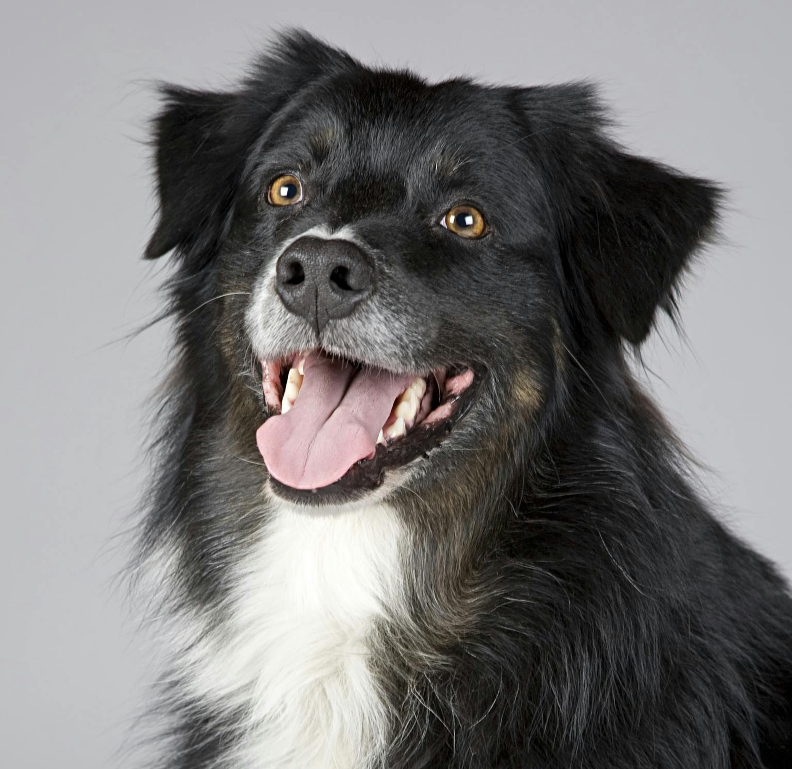

Bilderkennung (Klassifikation) mit ml5.js
Modell wird geladen...
Korrekt klassifizierte Bilder


Falsch klassifizierte Bilder

Eigenes Bild hochladen
Diskussion
Die Bilderkennung mit MobileNet zeigte bei gut beleuchteten, klaren Bildern sehr hohe Genauigkeit. Beispielsweise wurde ein Hund, ein Laptop und ein Apfel korrekt erkannt. Bei Bildern mit ungewöhnlichen Winkeln, verdeckten Objekten oder verfremdeten Farben kam es jedoch zu Fehlklassifikationen. Die Confidence-Werte waren bei korrekten Bildern meist über 80 %, bei falschen deutlich darunter. Die Klassifikation ist stark abhängig von den Trainingsdaten des Modells und den visuellen Merkmalen des Bildes. Besonders bei künstlich bearbeiteten Bildern ließ die Zuverlässigkeit nach. Für den Einsatz in realen Anwendungen sollte die Bildqualität beachtet und ggf. mit anderen Modellen verglichen werden.